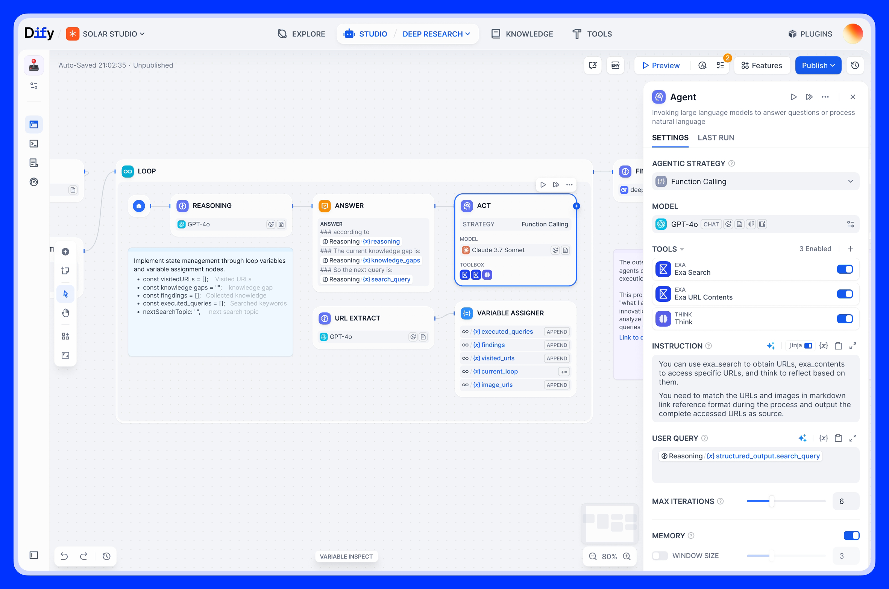
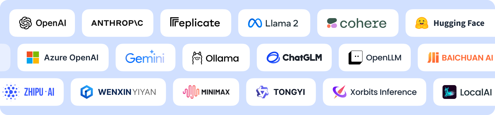
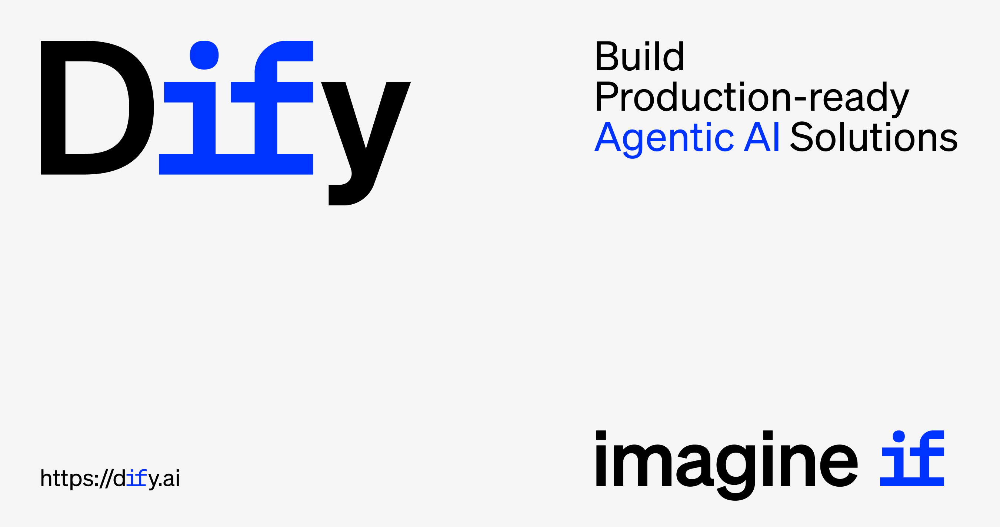

目录（7 章）
01🧠 Dify 是什么：LLMOps 标杆与竞品全对比 02🚀 快速上手：云端 5 分钟 or Docker 自部署 03⚙️ 核心功能：Workflow、RAG 知识库和 Agent 三板斧 04🔌 进阶技巧：API 集成、MCP 协议、生产部署 05🤔 常见问题：定价、踩坑和选型建议 06📚 RAG 知识库实战：分块调优与 Reranking 07🖥️ 自部署完整指南：Docker + Nginx + HTTPS📖 这本手册怎么读
这本书和官网 wiki《Dify 实战手册》同源（jiangren.com.au/wiki/dify-guide，免费、不用注册，官网那份持续更新）。完全没接触过 Dify 的，第 1、2 章看清楚它能干什么、5 分钟跑通一个应用；想做 RAG 知识库的，第 3 章了解三板斧、第 6 章专门讲分块策略和检索调优（这章能让召回率从 60% 拉到 90%+）；要上生产环境、数据私有化部署的，第 7 章从空白 VPS 到 HTTPS 上线全走一遍，坑都标出来了。书里命令全可复制，Docker Compose 配置可直接用。

🧠 Dify 是什么：开源 LLM 应用开发平台，GitHub 13 万星的 LLMOps 标杆
Dify 是一个开源的 LLM 应用开发平台——你可以用可视化拖拽的方式搭建 AI 聊天机器人、RAG 知识库问答、多步骤工作流、自主决策 Agent，然后一键发布成 API 或网页应用。不需要从零写 LangChain 代码，也不需要自己搞向量数据库。

为什么 Dify 值得关注
GitHub 上 139K+ star，全球 140 万台机器在跑 Dify，280 多家企业（Maersk、Novartis、Anker）付费用它。2026 年 3 月刚融了 3000 万美元 Pre-A 轮。
火的原因很直白：它把 LLM 应用开发的门槛拉到了最低。产品经理可以拖拽搭工作流，开发者可以通过 API 把 Dify 当后端，运维可以用 Docker 一键部署私有化版本。一个平台，三种人都能用。
核心定位：BaaS + LLMOps
Dify 的定位是 Backend-as-a-Service（后端即服务）加 LLMOps（大模型运维）。翻译成人话就是：
- BaaS：每个 AI 应用自动生成 REST API，你的前端直接调就行
- LLMOps：内置日志追踪、性能监控、标注反馈，帮你持续优化 AI 应用
五种应用类型
| 类型 | 特点 | 适合场景 |
|---|---|---|
| Chatbot | 多轮对话，有记忆 | 客服机器人、FAQ 助手 |
| Agent | 自主推理 + 调用工具 | 数据分析、多步骤任务 |
| Chatflow | 对话驱动的可视化工作流 | 复杂业务流程、多分支对话 |
| Workflow | 任务驱动，无记忆 | 批量处理、数据管道 |
| Text Generator | 单次文本生成 | 翻译、摘要、内容生成 |
我个人最推荐新手从 Chatflow 开始——它既有对话体验，又能在画布上看到整个逻辑链路，比纯 Chatbot 更灵活，比纯 Workflow 更直观。
技术架构一句话版
用户请求 → Next.js 前端 → Flask API → Celery Worker → LLM Provider
↓ ↓
PostgreSQL Vector DB (Weaviate/Qdrant)
(元数据) (RAG 向量检索)
整套用 Docker Compose 跑起来，7-8 个容器：API、Worker、Web、PostgreSQL、Redis、Sandbox（代码执行沙箱）。
跟竞品怎么选
| 维度 | Dify | Coze（扣子） | FastGPT | LangChain |
|---|---|---|---|---|
| 界面 | 可视化 + API 双模式 | 可视化为主 | 可视化为主 | 纯代码 |
| 自部署 | Docker/K8s，完全免费 | 2025 年 7 月才开源 | Docker，免费 | 库，不是平台 |
| 模型支持 | 100+ 模型，含国内厂商 | 字节系模型 + GPT | 通过 OneAPI 接入 | 最广，但要写代码 |
| RAG | 内置全流程 | 内置 | 精度更高（医疗/金融） | 需自己组装 |
| Agent | Function Calling + ReAct | Bot 模式 | 基础 | 最灵活（代码级） |
| 适合谁 | 开发者 + 运营 + 企业 | C 端用户 + 低代码 | 中国中小企业 | 纯开发者 |
我的选型建议：想快速出活、团队有非技术人员 → Dify。只做国内 C 端 Bot → Coze。对 RAG 精度有极致要求（医疗/法律） → FastGPT。全部要自定义、团队全是开发者 → LangChain。
不是非此即彼——很多团队用 Dify 做原型验证，确认可行后再用 LangChain 重写核心模块。
🚀 Dify 快速上手：云端 5 分钟 or 本地 Docker 部署

Dify 提供两条上手路线：云端 Sandbox 零配置试用，或者 Docker Compose 部署到自己的服务器。两条路我都走过，各有各的好。

路线一：云端 Sandbox（5 分钟上手）
- 打开 dify.ai，点右上角 Get Started
- 用 GitHub 或 Google 账号登录
- 进入 Dashboard，直接点 "Create App"
- 完事。不需要信用卡，不需要装任何东西
Sandbox 免费额度：
| 项目 | 限额 |
|---|---|
| 每月消息数 | 200 条 |
| 应用数 | 10 个 |
| 向量存储 | 5 MB |
| 文档上传 | 50 个 |
| 团队成员 | 1 人 |
| 日志保留 | 15 天 |
200 条消息看着少，但够你体验所有功能、跑通一个 demo。真正要用起来，往下看路线二。
路线二：Docker Compose 本地部署（免费无限制）
自部署的 Dify 没有消息数限制、没有应用数限制、没有团队人数限制——你的硬件就是唯一瓶颈。
最低配置：2 核 CPU、4 GB RAM、20 GB 硬盘、Docker 20.10+
推荐配置：4 核、8 GB RAM。如果还要跑 Ollama 本地模型，建议 16 GB 起步。
# 1. 克隆仓库 git clone https://github.com/langgenius/dify.git # 2. 进入 docker 目录 cd dify/docker # 3. 复制环境变量文件 cp .env.example .env # 4. 生成密钥并填入 .env 的 SECRET_KEY openssl rand -base64 42 # 5. 启动所有服务 docker compose up -d # 6. 等 1-2 分钟，检查容器状态 docker compose ps
全部显示 healthy 后，浏览器打开 http://你的IP，创建管理员账号，就能用了。
升级也简单：
cd dify/docker git pull origin main docker compose pull docker compose up -d
配模型：接 OpenAI / Claude / Ollama
拿到 Dify 后第一件事——去 Settings → Model Providers 配模型。
接 OpenAI：填 API Key 就行，GPT-4o、GPT-3.5-turbo、DALL-E、Whisper 全部可用。
接 Anthropic：填 API Key，Claude Sonnet 4.6、Claude 3.5 Sonnet、Claude 3 Opus 都能用。
接 Ollama（本地模型，零成本）：
# 先在服务器上装 Ollama curl -fsSL https://ollama.com/install.sh | sh # 拉一个模型 ollama pull llama3 ollama pull deepseek-r1 # 在 Dify 里添加 Ollama provider # Server URL: http://host.docker.internal:11434
用 Ollama 跑本地模型的好处：零 API 费用、数据不出服务器、断网也能用。一个 7B 参数的模型大概吃 4.5 GB 内存，日常问答够用了。
我的建议是：先用 OpenAI 或 Claude 的 API 跑通流程，确认效果满意后再考虑用 Ollama 本地模型降低成本。
创建第一个应用
配好模型后，点 Dashboard → Create App：
- 选 Chatflow（推荐新手）
- 给应用起个名字，比如"产品 FAQ 助手"
- 进入编排界面——左边是节点列表，中间是画布，右边是测试对话窗
- 画布上默认有 Start → LLM → Answer 三个节点
- 点 LLM 节点，写 System Prompt，选模型
- 右边窗口测试几轮对话
- 点右上角 Publish，搞定
发布后 Dify 自动生成：
- 一个可分享的网页链接
- 一套 REST API（带 Bearer Token 认证）
- 一段可嵌入的 iframe 代码
三种方式让你的 AI 应用立刻能用。
⚙️ Dify 核心功能详解：Workflow、RAG 知识库和 Agent 三板斧

Dify 最值钱的三个功能是 Workflow 工作流、RAG 知识库和 Agent 智能体。把这三个搞明白，基本上能覆盖 80% 的 AI 应用场景。
Workflow：拖拽搭建 AI 流水线
Dify 的 Workflow 编辑器是一个无限画布，你把各种节点拖上去、连线、配参数，一条 AI 流水线就搭好了。
核心节点类型：
| 节点 | 作用 | 使用频率 |
|---|---|---|
| LLM | 调用大模型 | 几乎每个流程都用 |
| Knowledge Retrieval | 查询 RAG 知识库 | 做问答类应用必用 |
| Question Classifier | LLM 驱动的意图分类 | 多分支路由 |
| If/Else | 条件判断分支 | 逻辑控制 |
| Code | 执行 Python 或 Node.js | 数据清洗、格式转换 |
| HTTP Request | 调外部 REST API | 对接第三方服务 |
| Template | Jinja2 模板渲染 | 拼接输出文本 |
| Agent | 自主推理 + 工具调用 | 复杂决策场景 |
| Human Input | 暂停等人工审核 | v1.13 新增，审批流程 |
一个典型的客服 Workflow 长这样：
Start → Question Classifier → [产品咨询] → Knowledge Retrieval → LLM → Answer
→ [退换货] → HTTP Request (查订单) → LLM → Answer
→ [投诉] → Human Input → LLM → Answer
实用技巧：Workflow 分两种——Chatflow（带对话记忆，适合聊天场景）和 Workflow（无状态，适合批量任务）。如果你的应用需要多轮对话，选 Chatflow；如果是定时跑的数据处理管道，选 Workflow。
RAG 知识库：让 AI 读懂你的文档
RAG（Retrieval-Augmented Generation）是让 AI 基于你自己的文档回答问题的技术。Dify 把整个 RAG 流程封装好了：上传文档 → 自动分块 → 向量化 → 存入向量数据库 → 检索 → 注入 LLM 上下文。
支持的文件格式：TXT、Markdown、PDF、HTML、XLSX、DOCX、CSV、PPTX、EPUB——基本上办公文档都能吃。单文件上限 15 MB，可以改配置放大。
三种分块策略：
- General（通用）：按分隔符和长度切块，大部分场景够用
- Parent-Child（父子）：小块精确匹配，大块提供上下文，检索精度更高
- Q&A：适合 FAQ 表格类文档，按问答对切分
# 通过 API 创建知识库并上传文档
import requests
headers = {"Authorization": "Bearer YOUR_API_KEY"}
# 创建知识库
resp = requests.post("http://localhost/v1/datasets", headers=headers,
json={"name": "产品手册"})
dataset_id = resp.json()["id"]
# 上传文档
with open("manual.pdf", "rb") as f:
requests.post(f"http://localhost/v1/datasets/{dataset_id}/document/create-by-file",
headers=headers,
files={"file": f},
data={"indexing_technique": "high_quality",
"process_rule": '{"mode": "automatic"}'})
检索模式：向量搜索（语义匹配）、全文搜索（关键词匹配）、混合搜索（两者结合 + Rerank 重排序）。我建议直接用混合搜索——精度最高，速度也没慢多少。
Agent 智能体：让 AI 自己决定该干什么
Agent 不是按你设计的固定流程走，而是 AI 自己判断该调用什么工具、该执行什么步骤。
两种推理策略：
- Function Calling：模型一次性判断意图、选工具、提取参数。速度快，适合意图明确的场景
- ReAct：模型交替"思考"和"行动"，一步一步推进。适合需要多轮推理的复杂任务
工具类型：
- 内置工具：Google 搜索、计算器、DALL-E 生图、天气查询等 50+ 个
- 自定义 API 工具：写一个 OpenAPI Schema，Dify 自动帮你调
- 子工作流工具：把另一个 Dify Workflow 当工具调用，实现 Agent 套 Workflow
# 自定义工具的 OpenAPI Schema 示例
openapi: 3.0.0
info:
title: 订单查询
version: 1.0.0
paths:
/api/orders/{orderId}:
get:
summary: 根据订单号查询订单状态
parameters:
- name: orderId
in: path
required: true
schema:
type: string
responses:
'200':
description: 订单信息
Agent 搭配 RAG 知识库和自定义工具，基本上能处理大部分企业内部的智能问答需求。
🔌 Dify 进阶技巧：API 集成、插件生态和生产环境实战

Dify 基础功能上手后，这些进阶玩法能让你的 AI 应用真正跑在生产环境里。

API 集成：把 Dify 当 AI 后端用
每个 Dify 应用发布后自动生成一套 REST API。在 App → API Access 页面拿到 API Key，你的前端或后端直接调就行。
import requests
API_KEY = "app-xxxxxxxxxxxx"
BASE_URL = "http://localhost/v1"
# 发送消息（流式返回）
response = requests.post(f"{BASE_URL}/chat-messages",
headers={"Authorization": f"Bearer {API_KEY}"},
json={
"inputs": {},
"query": "帮我总结一下这个季度的销售数据",
"user": "user-123",
"response_mode": "streaming",
"conversation_id": "" # 空字符串 = 新对话
},
stream=True)
for line in response.iter_lines():
if line:
print(line.decode())
几个实用接口：
POST /chat-messages— 发消息（支持 streaming）GET /conversations— 列出用户的所有对话POST /audio-to-text— 语音转文字GET /messages/{id}/feedbacks— 获取用户反馈
这套 API 最实用的地方是：你可以用任何语言、任何框架调用 Dify。React、Vue、Flutter、微信小程序——只要能发 HTTP 请求就行。不需要绑定 Dify 的前端。
MCP 协议：双向打通外部工具链
Dify v1.6.0 起原生支持 MCP（Model Context Protocol），而且是双向的：
- 作为 MCP Client：Dify 可以调用外部 MCP Server 提供的工具（比如 Claude Code 的文件操作、数据库查询）
- 作为 MCP Server：Dify 的应用可以被其他 MCP 客户端调用
这意味着你可以把 Dify 接入更大的 AI 工具生态。比如在 Claude Desktop 里直接调用你在 Dify 搭建的 RAG 知识库。
插件生态和 Marketplace
Dify v1.0 引入了插件架构。模型、工具、Agent 策略都是插件，可以独立安装、升级、替换。
Marketplace（marketplace.dify.ai）上有社区贡献的插件：
- 模型插件：接入各种 LLM provider
- 工具插件：Slack 发消息、Jira 创建 ticket、发邮件
- Agent 策略插件：CoT、ToT（Tree-of-Thought）、GoT（Graph-of-Thought）
自己开发插件也不复杂——写一个 manifest.yaml 定义元信息，Python 写逻辑，上传到 Marketplace。
生产环境优化
Dify 跑 demo 容易，跑在生产环境需要注意几件事：
1. 反向代理
# Nginx 配置示例
server {
listen 443 ssl;
server_name dify.yourcompany.com;
location / {
proxy_pass http://127.0.0.1:80;
proxy_set_header Host $host;
proxy_set_header X-Real-IP $remote_addr;
proxy_buffering off; # 重要：SSE 流式输出需要关闭缓冲
}
}
2. 向量数据库选型：默认 Weaviate 够用。数据量大（100 万+ 文档）考虑换 Qdrant 或 Milvus。
3. Worker 扩容：高并发场景增加 Celery Worker 副本数。
4. 监控：Dify 内置 LLMOps 日志面板，按应用维度看调用量、延迟、token 消耗、用户满意度。
真实案例
Kakaku.com（日本价格比较网站）：75% 的员工用 Dify 搭建 AI 应用，一家公司内部跑着近 950 个 Dify 应用。
全球科技公司 VoC 分析：用 Dify Workflow 编排 5 个 Agent（翻译、标注、分析、质检、汇总），每月处理 5 万条用户评价，单次分析时间从 8 小时降到 3 小时。
企业快速原型：某公司一个月内用 Dify 搭了 200+ AI 应用，其中一个应用被使用近 1 万次。
这些案例说明一个趋势：Dify 正在从"开发者工具"变成"全员 AI 平台"。

🤔 Dify 常见问题 FAQ：定价、踩坑和选型建议

用 Dify 过程中最常遇到的问题都在这里了，包括定价怎么算、自部署踩坑合集、什么时候该换别的工具。
定价：到底花多少钱
Dify 有两种用法，成本差很多：
| 方案 | Sandbox | Professional | Team | 自部署 |
|---|---|---|---|---|
| 月费 | $0 | $59 | $159 | $0 |
| 消息数 | 200/月 | 5,000/月 | 10,000/月 | 无限 |
| 应用数 | 10 | 50 | 200+ | 无限 |
| 向量存储 | 5 MB | 200 MB | 20 GB | 看硬盘 |
| 团队成员 | 1 | 3 | 多人 | 无限 |
我的建议：个人学习或小团队直接自部署，一台 4 核 8G 的服务器（月费约 $20-40）就够跑。只有不想碰服务器运维的团队才考虑云端付费版。
年付打八三折。学生和教育工作者可以申请免费使用。
自部署踩坑合集
端口冲突：Dify 默认用 80 端口。如果服务器上已经跑着 Nginx 或 Apache，先改 .env 里的端口映射：
# .env 文件 EXPOSE_NGINX_PORT=3000 # 然后访问 http://你的IP:3000
Ollama 连不上：Docker 容器里访问宿主机的 Ollama，URL 不能写 localhost：
# 错误写法 OLLAMA_HOST=http://localhost:11434 # 正确写法（Docker Desktop for Mac/Windows） OLLAMA_HOST=http://host.docker.internal:11434 # 正确写法（Linux） OLLAMA_HOST=http://172.17.0.1:11434
知识库上传后检索不到内容：通常是分块策略不对。PDF 文件建议用 Parent-Child 模式；短文本 FAQ 用 Q&A 模式。检索模式选"混合"，别只用向量搜索。
升级后插件报错：v1.11 之后的版本对插件签名验证更严格。临时解决：在 .env 加 FORCE_VERIFYING_SIGNATURE=false。正式环境建议等插件作者更新。
OpenAI TTS 不出声：源码部署的用户需要装 FFmpeg：
# Ubuntu/Debian apt-get install ffmpeg # macOS brew install ffmpeg
内存不够用：知识库文档多或并发量大时，Docker 容器可能 OOM。给 Docker Desktop 分配至少 8 GB 内存，或者在 docker-compose.yaml 里加资源限制。
谁适合用 Dify，谁不适合
适合的人：
- 想快速搭建 AI 应用原型的开发者和产品经理
- 不会写代码但需要 AI 工具的运营和业务人员——Dify 的可视化编排真的不需要编程
- 需要私有化部署、数据不能出内网的企业
- 想同时接多个模型（GPT-4o + Claude + 国产模型）做 A/B 测试的团队
不太适合的场景：
- 对 RAG 精度有极致要求的垂直领域（医疗、法律），FastGPT 的检索精度目前更高
- 需要从底层完全定制 AI 链路的场景——Dify 的抽象层会限制灵活性，不如直接用 LangChain
- 许可证限制：Dify 的开源协议禁止未授权的 SaaS 转售。你用 Dify 给自己公司搭应用没问题，但不能用它搭一个 SaaS 平台卖给别人
跟 Coze / FastGPT 怎么选
| 场景 | 选 Dify | 选 Coze | 选 FastGPT |
|---|---|---|---|
| 想用多个国际模型 | ✅ | ❌ 字节系为主 | ⚠️ 需配 OneAPI |
| 非技术人员搭应用 | ✅ 可视化好 | ✅ 更简单 | ⚠️ 门槛略高 |
| 数据私有化部署 | ✅ 成熟 | ⚠️ 刚开源 | ✅ 成熟 |
| RAG 精度优先 | ⚠️ 够用 | ⚠️ 一般 | ✅ 最强 |
| 工作流编排 | ✅ 最强 | ⚠️ 基础 | ⚠️ 基础 |
| 社区和插件生态 | ✅ 139K star | ✅ 字节生态 | ⚠️ 较小 |
简单说：Dify 是全能选手，大部分场景都能用，但每个单项可能不是第一。如果你没有明确的偏好，从 Dify 开始是最安全的选择。
学习资源
- 官方文档——最权威，更新也快
- GitHub Discussions——遇到问题先搜这里
- Awesome Dify Workflow——社区共享的工作流模板，直接导入能用
- Dify 101——第三方教程站，有分步骤截图
别一上来就看视频教程——很多过时了。Dify 迭代很快，v1.0 之后的架构和之前完全不同，优先看官方文档。
📚 Dify RAG 知识库实战：分块策略、检索调优与 reranking

很多人上传完文档，测试几条问题，发现回答驴唇不对马嘴，就把锅甩给大模型。其实多半是知识库配错了。Dify RAG 管道有七八个配置点，任何一个没调好都会影响最终质量。这章把每个参数讲清楚，顺带给一个调优流程。
RAG 管道的五个阶段
先建一个心智模型，知道问题出在哪一层才能对症下药：
文档上传 → 分块 (Chunking) → 向量化 (Indexing) → 检索 (Retrieval) → 重排 (Reranking) → 生成 (Generation)
分块决定你存进去的信息粒度，检索决定能召回什么，reranking 决定送给模型的是不是真正相关的内容。三个环节相互影响，不能只盯着一个。
分块模式：三选一，选错就从头来
分块结构一旦保存无法修改。上传文档前想清楚用哪种模式，改错了只能删掉重传。
通用模式（General）
默认选项，适合大多数场景：产品文档、新闻、博客、说明书。按分隔符（换行、段落）切块，可以指定最大块长度（通常 512-1000 token）和重叠长度（overlap，通常 50-100 token）。
段落 A（1000 token） ↓ 切割 块 1: 第 1-512 token 块 2: 第 462-974 token ← 50 token 重叠确保上下文连续 块 3: 第 924-1000 token
overlap 不要设 0。没有重叠时，切块边界处的信息很容易被两个块各分走一半，单独看都不完整。通常设总块长的 10%。
父子模式（Parent-Child）— Dify v0.15.0+
父子模式解决的是"精准匹配"和"上下文丰富"的矛盾。
- 子块（Child chunk）：小，几十到一两百 token，用于向量相似度匹配——短文本的 embedding 更精准
- 父块（Parent chunk）：大，几百 token 或整篇文档，检索命中后送给 LLM——保留足够上下文
工作流程：用户问题 → 和子块做相似度匹配 → 找到子块 → 返回对应的父块给模型。
两种父块策略：
- 段落模式：按段落分父块，父块相对独立，适合有清晰段落结构的技术文档
- 全文档模式：整个文档作为一个父块，适合内容密度高、前后关联强的合同、报告
父子模式只支持 High Quality 索引，不支持 Economy 模式。
Q&A 模式
文档上传后，Dify 用 LLM 自动从每个段落生成若干问答对，存储的不是原文而是问答对。检索时用用户问题和这些预生成问题做匹配。
适合场景非常具体：FAQ 文档、产品客服知识库、帮助中心。用户通常直接问"怎么退货""发货多久"这类问题，和预生成问题的相似度非常高，召回精度远高于通用模式。
不适合：技术文档、合同文本、需要综合多个段落来回答的问题。
Q&A 模式只支持 High Quality，而且处理成本比通用模式高很多——每个段落都要调一次 LLM 生成问答对。文档量大的时候算一下 token 消耗再决定。
索引质量：High Quality vs Economy
| High Quality | Economy | |
|---|---|---|
| 索引方式 | 调用 embedding 模型向量化 | 倒排索引（关键词） |
| 检索精度 | 高，理解语义 | 低，只做关键词匹配 |
| 成本 | 按 token 计费 | 免费 |
| 支持的检索模式 | 向量 / 全文 / 混合 | 仅全文 |
| 支持父子/Q&A 模式 | ✅ | ❌ |
生产环境没有理由用 Economy。Embedding 的成本不高——1MB 的文档用 text-embedding-3-small 处理大概花几美分。Economy 存在是给本地测试用的。
检索模式配置
三种检索模式
向量检索（Vector Search）：把用户问题也向量化，计算和文档块的余弦相似度，返回语义最接近的块。能处理同义词和表达方式不同的情况，但对专有名词、产品型号这类需要精确匹配的词效果不好。
全文检索（Full-text Search）：BM25 算法，关键词匹配。对 SKU、命令名称、专有名词精准，但不理解语义。
混合检索（Hybrid Search）：两者都跑，结果合并后排序。生产环境默认选混合，几乎总比单一模式强。
混合检索有个权重参数 α（通常 0-1），控制向量分数和全文分数的比重：
final_score = α × vector_score + (1 - α) × keyword_score
- α = 1：纯向量
- α = 0：纯关键词
- α = 0.5：各占一半（默认，大多数场景合适）
文档里专有名词多、精确查询多的场景把 α 调低；通用问答场景 α = 0.5 或稍高。
TopK 和 Score Threshold
TopK：检索阶段返回多少个块送给下游（reranker 或直接给 LLM）。默认通常是 5。
TopK 不是越大越好：
- 太小：漏掉相关内容
- 太大：送给 LLM 的 context 里噪声变多，而且吃 token
经验值：混合检索 TopK 设 5-10，如果接了 reranker 可以设 15-20 让 reranker 从更多候选里挑。
Score Threshold：低于这个分数的块直接过滤掉，不送给 LLM。
用 Score Threshold 要小心——设太高容易什么都检索不到。建议先把 threshold 设 0（不过滤），观察检索到的块的分数分布，再决定合理的下限。
Reranking：召回率的最后一关
Reranker 是一个独立的评分模型，接受（用户问题, 候选块）对，重新打分并排序，输出真正相关的 Top N 给 LLM。
它解决的问题：向量相似度不等于实际相关性。两段话向量很近，但未必都能回答当前问题。Reranker 做的是精排，代价是计算量更大，只适合在 TopK 候选集上跑。
可选的 Reranker 模型
Cohere Rerank 3：商业 API，精度高，直接在 Dify 模型设置里填 API key 接入。对英文效果最好，中文效果也可以接受。按每次 rerank 调用的文档数计费。
BGE Reranker（BAAI/bge-reranker-v2-m3）：开源模型，中英双语，可以自部署在 Ollama 或 vLLM 上，自部署后没有 API 费用。中文场景优先考虑这个。
Dify 里接入 BGE Reranker 的配置示意：
# 在 Dify 模型提供商里添加自部署 rerank 端点 model_type: rerank model: BAAI/bge-reranker-v2-m3 endpoint: http://your-server:8080/rerank # vLLM 或 xinference 部署
接入后在知识库的检索设置里勾选「启用 Reranking」，选择对应模型，设置：
- Rerank TopK：从候选里最终保留多少个块给 LLM（通常 3-5）
- Score Threshold：reranker 分数低于此值的块丢弃（可选）
Reranker 调用流程
用户问题
↓
混合检索 → TopK=15 个候选块
↓
Reranker 对 15 个候选重打分
↓
按 Reranker 分数排序，取 Top 5
↓
送给 LLM 生成答案
检索 TopK 设大（15-20），Reranker TopK 设小（3-5），让精排模型承担过滤职责。
实战调优流程
遇到知识库回答质量差，不要乱调参数，按这个顺序排查：
第一步：确认内容在知识库里
在知识库页面直接搜索关键词，看有没有召回结果。没有召回说明分块出了问题，或者文档根本没被正确解析（PDF 的图片内容、扫描件默认无法提取文字）。
# Dify 支持测试检索，在知识库详情页 → 召回测试 # 输入用户的问题，观察返回的块和分数
第二步：看召回块是否包含答案
召回了内容，但回答还是不对，看一下召回的块里有没有答案。
- 有答案但没用：LLM 忽略了相关内容，可能是 context 太长、噪声太多，降低 TopK 或开启 reranker
- 没有答案：分块切得太碎把相关信息分散了，换父子模式，或者调大块长度
第三步：针对文档类型选分块策略
| 文档类型 | 推荐分块模式 | 推荐检索模式 |
|---|---|---|
| 产品 FAQ / 帮助中心 | Q&A 模式 | 向量或混合 |
| 技术文档（有层级结构） | 父子模式（段落） | 混合 + Reranker |
| 合同 / 长报告 | 父子模式（全文档） | 混合 + Reranker |
| 新闻 / 博客文章 | 通用模式 | 混合 |
| 产品目录 / 含 SKU | 通用模式 | 混合，α 偏向关键词 |
第四步：调整参数组合
一个在大多数场景表现稳定的配置：
分块模式: 父子模式（段落） 索引质量: High Quality 检索模式: 混合检索，α=0.5 检索 TopK: 15 Reranker: BGE-reranker-v2-m3（中文场景）或 Cohere Rerank 3（英文场景） Reranker TopK: 5 Score Threshold: 0.3（先跑几轮再调）
这不是最优解，是个稳健的起点。根据你的文档类型和问答模式，每个参数都可能需要调整。
几个容易踩的坑
分块后不能改模式：选错了只能删重传，大文档要重新 embedding，代价不小。第一次上传小样本测试清楚再批量导入。
PDF 扫描件无法检索：扫描 PDF 里的文字是图片，Dify 默认不做 OCR。要么换成文字版 PDF，要么用支持 OCR 的 parser（Dify 的知识管道里可以配置）。
Reranker 和 Embedding 要语言匹配：用了中文 embedding 模型（比如 text-embedding-3-small 支持多语言），但 Reranker 选了只支持英文的版本，中文结果排序会乱。中文场景 Reranker 用 BGE 或 Cohere v3（支持多语言）。
知识库版本和应用绑定：一个知识库可以绑定多个 Dify 应用，更新文档后所有绑定的应用都会受影响。生产环境的知识库更新前先在测试应用里验证。
父子模式的索引成本：父子模式存了子块又存父块，索引存储量是通用模式的 2 倍左右。不是成本问题，但向量数据库容量要留余量。
📊 RAG 调优到这步，你已经比大多数 Dify 用户走得更深了。想把 RAG + Dify 做成能展示的项目？Amelia 聊聊你的方向：

🖥️ Dify 自部署完整指南：Docker Compose + Nginx 反向代理 + HTTPS

云端托管的 Dify 够用，但数据出境、API 限流、每月 token 配额这几件事总会在不合时宜的时候让你难受。自部署一套就没这些烦恼——代价是要自己管机器、管证书、管升级。这章把整条路走一遍，顺带把坑标出来。
前置条件
机器规格：最低 2 vCPU / 4 GB RAM（跑完整栈 + 向量数据库），推荐 4 vCPU / 8 GB。磁盘留 40 GB 以上，向量数据会持续增长。
软件依赖：
- Docker Engine 24.0+
- Docker Compose v2（命令是
docker compose，不是旧版docker-compose） - 一个指向该服务器 IP 的域名 A 记录（申请 SSL 证书用）
端口：服务器防火墙放开 80、443、22。不要直接暴露 Dify 内部端口（5001、3000 等）到公网。
架构速览
Dify 的 docker-compose.yaml 默认起八个服务：
| 服务 | 作用 |
|---|---|
api | Dify 后端 Python Flask，端口 5001 |
web | Next.js 前端，端口 3000 |
worker | Celery 异步任务（RAG 索引、回调） |
db | PostgreSQL，应用元数据 |
redis | 会话缓存 + 任务队列 |
weaviate | 默认向量数据库 |
sandbox | 代码执行沙箱（隔离环境运行用户代码） |
nginx | 内置反向代理，把 /api/ 路由到 api，其余路由到 web |
外层再加一个宿主机 Nginx 做 HTTPS 终端，证书放在宿主机上，内部流量走 HTTP。
Step 1：拉代码，配 .env
git clone https://github.com/langgenius/dify.git cd dify/docker cp .env.example .env
.env.example 里有一百多个变量，大多数默认值可以直接用。必须改的几个：
# .env — 必改项 # 换成强随机字符串（openssl rand -hex 32 生成） SECRET_KEY=your-random-secret-key-here # 换成你的域名（后面配完 HTTPS 再改成 https://） CONSOLE_URL=https://dify.example.com APP_URL=https://dify.example.com # 如果宿主机 80/443 已被占用，把内置 nginx 挪到别的端口 EXPOSE_NGINX_PORT=8080 EXPOSE_NGINX_SSL_PORT=8443
SECRET_KEY 不改的话用的是示例值，等于把签名密钥公开，任何人都能伪造 session。
选择向量数据库
默认是 Weaviate。如果你已经有 Qdrant 或 Milvus，在 .env 里改：
VECTOR_STORE=qdrant QDRANT_URL=http://your-qdrant-host:6333 QDRANT_API_KEY=your-key
不改的话直接用内置 Weaviate 就行，零额外配置。
Step 2：启动 Dify 容器栈
cd dify/docker docker compose up -d
第一次启动会拉镜像，根据网速大概要 3-8 分钟。确认所有服务跑起来：
docker compose ps
期望输出每个服务都是 Up（healthy 更好）。如果 api 或 worker 反复重启，先看日志：
docker compose logs api --tail 50 docker compose logs worker --tail 50
最常见原因：.env 的 SECRET_KEY 没改，或者 PostgreSQL 还没完成初始化就被 api 连接了——后者等十秒再 docker compose restart api 一般能解决。
Step 3：宿主机 Nginx 反向代理
内置 Nginx 监听 8080（或者你在 .env 里设的端口），宿主机 Nginx 在 80/443 做 TLS 终端，然后把流量转发进去。
先装 Nginx：
# Ubuntu/Debian sudo apt install nginx -y
创建站点配置（先只配 HTTP，等会儿 Certbot 会自动改成 HTTPS）：
# /etc/nginx/sites-available/dify
server {
listen 80;
server_name dify.example.com;
# 大文件上传（知识库文档）
client_max_body_size 100M;
location / {
proxy_pass http://127.0.0.1:8080;
proxy_set_header Host $host;
proxy_set_header X-Real-IP $remote_addr;
proxy_set_header X-Forwarded-For $proxy_add_x_forwarded_for;
proxy_set_header X-Forwarded-Proto $scheme;
# WebSocket 支持（Dify 控制台用到）
proxy_http_version 1.1;
proxy_set_header Upgrade $http_upgrade;
proxy_set_header Connection "upgrade";
proxy_read_timeout 300s;
proxy_connect_timeout 10s;
}
}
启用并测试：
sudo ln -s /etc/nginx/sites-available/dify /etc/nginx/sites-enabled/ sudo nginx -t sudo systemctl reload nginx
此时用 curl http://dify.example.com 应该能拿到 Dify 前端的 HTML。
Step 4：Certbot 申请 SSL 证书
sudo apt install certbot python3-certbot-nginx -y sudo certbot --nginx -d dify.example.com
Certbot 会自动修改你的 Nginx 配置，加上 ssl_certificate、ssl_certificate_key，并把 80 端口重定向到 443。完成后验证：
sudo nginx -t && sudo systemctl reload nginx curl -I https://dify.example.com # 期望看到 HTTP/2 200
证书 90 天到期，Certbot 的 systemd timer 会自动续期，不需要手动操作。
最终 Nginx 配置长这样
Certbot 改完之后，配置大概是：
server {
listen 80;
server_name dify.example.com;
return 301 https://$host$request_uri;
}
server {
listen 443 ssl http2;
server_name dify.example.com;
ssl_certificate /etc/letsencrypt/live/dify.example.com/fullchain.pem;
ssl_certificate_key /etc/letsencrypt/live/dify.example.com/privkey.pem;
ssl_protocols TLSv1.2 TLSv1.3;
ssl_ciphers HIGH:!aNULL:!MD5;
client_max_body_size 100M;
location / {
proxy_pass http://127.0.0.1:8080;
proxy_set_header Host $host;
proxy_set_header X-Real-IP $remote_addr;
proxy_set_header X-Forwarded-For $proxy_add_x_forwarded_for;
proxy_set_header X-Forwarded-Proto https;
proxy_http_version 1.1;
proxy_set_header Upgrade $http_upgrade;
proxy_set_header Connection "upgrade";
proxy_read_timeout 300s;
}
}
注意 X-Forwarded-Proto https 硬编码成 https，不用 $scheme——因为宿主机到容器那段是 HTTP，如果用 $scheme 传进去的是 http，Dify 生成的链接会变成 http:// 开头，表单提交 CSRF 校验会报错。
Step 5：Dify 首次初始化
打开浏览器访问 https://dify.example.com，进入管理员账号创建页面。填完邮箱和密码，登进控制台，去「设置 → 模型供应商」填你的 OpenAI / Anthropic / 本地 Ollama 的 API Key。
如果你用 Ollama 或 LiteLLM 这类本地模型，BASE_URL 要填宿主机内网 IP 而不是 localhost，容器里的 localhost 解析不到宿主机。Docker Compose 默认网络下，用 host.docker.internal（Mac/Windows）或宿主机内网 IP（Linux）。
升级 Dify
cd dify/docker git pull docker compose pull docker compose down docker compose up -d
数据卷（PostgreSQL、Weaviate、上传文件）挂在命名 volume 上，down 不会删数据。但升级前建议先备份 PostgreSQL：
docker compose exec db pg_dump -U postgres dify > dify-backup-$(date +%Y%m%d).sql
常见问题排查
问：首页白屏，控制台报 502 先看 docker compose ps，确认 api 和 web 都在跑。再检查宿主机 Nginx 的 proxy_pass 端口有没有对上 .env 里的 EXPOSE_NGINX_PORT。
问：上传知识库文档报 413 Request Entity Too Large Nginx 默认限制 1MB。在宿主机 Nginx 配置里加 client_max_body_size 100M;（已在上面的示例里包含）。
问：certbot 报 "Could not bind to IPv4 or IPv6" certbot --nginx 的 standalone 模式需要占用 80 端口，但你的 Nginx 已经在用。用 --nginx 插件就好（不是 --standalone），它会和 Nginx 协作，不需要停服。
问：Dify 生成的链接是 http:// 不是 https:// .env 里的 CONSOLE_URL 和 APP_URL 还没改成 https://。改完 docker compose restart api 生效。
问：磁盘快满了 向量数据、Docker 镜像层和日志是三大占用。清理未使用镜像：docker image prune -f。Weaviate 数据在 volumes/weaviate，没有简单缩容方法，规划时提前留够空间。
自部署的核心优势是数据完全在自己手里，模型调用也走自己的 API Key，适合有数据合规要求或者用量大的场景。跑起来之后日常维护很少，主要就是偶尔升级版本和看一眼磁盘使用率。
🖥️ 自部署 Dify 跑起来了，数据在自己手里。接下来想用它做什么项目、怎么写进简历？Rain 帮你看：